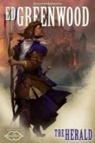

The Herald
Écrit par Ed Greenwood, publié en Juin 2014.
AVERTISSEMENT
Cette page révèle certaines informations qui pourraient gâcher la lecture du roman. Si vous pensez lire ce livre dans un futur proche, mieux vaut ne pas parcourir ce résumé !
1487. Le grand prince Telamont, père des douze princes de Pénombre, qui recherche depuis quelques temps tous les Élus qu'il peut et en particulier ceux de Mystra pour les éliminer afin de permettre à sa déesse Shar de régner sans partage sur la magie, envoie deux espions triés sur le volet, Maerandor et Helgore, à Candlekeep et à Myth Drannor respectivement.
Pendant ce temps, le magicien Elminster et la barde Storm Silverhand, tous deux élus de Mystra, accompagnés de la roublarde Amarune, sont en train d'essayer de reconstruire la Toile [Weave] lorsqu'ils sont interrompus par plusieurs agents shadovars. Sentant que quelque chose d'important est en train de se mettre en place, Elminster décide alors d'agir plus rapidement. Il ira seul à Candlekeep, à la recherche des écrits de Khelben qui lui permettront de manipuler la Toile, pendant que Storm et Amarune iront à Myth Drannor aider les elfes qui y sont assiégés.
A Candlekeep, la tension est perceptible. Maerandor, qui a assassiné un des moines en charge de cette grande bibliothèque pour prendre sa place, retrouve plus d'une dizaine d'espions shadovars infiltrés depuis longtemps. Elminster, qui lui aussi se fait passer pour un moine, se retrouve pour sa part face à deux des Sept Soeurs : Alustriel et Laeral Silverhand, cette dernière étant la femme de Khelben et la dirigeante des Étoiles de Lunes, une faction dissidente des Ménestrels. Celles-ci lui expliquent que Shar cherche à détruire Mystra pour s'emparer de la Toile, et que si elle y parvient avant la fin de la Fracture entre Toril et Abeir, elle sera définitivement la déesse de la magie aux yeux d'Ao. Les deux sœurs sont donc ici pour détruire Candlekeep afin d'éliminer le risque que Shar et son plus puissant agent, Telamont, ne s'emparent des puissantes protections magiques [wards] de la bibliothèque qui, avec le mythal de Myth Drannor, sont les plus grandes sources actuelles d'énergie magique dans les royaumes. Elminster s'oppose violemment à ce dessein, le ton monte et le combat éclate. Les sorts fusent de toutes parts et Elminster ne doit son salut qu'à l'apparition de l'archiliche Larloch, qui lui expliquera plus tard qu'il a besoin de lui pour sauver les royaumes et que Telamont doit être stoppé. Afin de ne pas être perturbé dans cette tâche, il demande au vieux magicien de provoquer l'affrontement entre les shadovars et les Étoiles de Lunes. Malheureusement tout ceci est une ruse et Larloch finit par s'emparer des protections magiques de Candlekeep pour son propre compte. Elminster doit alors admettre que Alustriel et Laeral avaient raison et accepte finalement que le mythal de Myth Drannor doit être détruit afin d'être certain que ni l'archiliche ni Telamont ne s'en empareront. Les trois se rendent alors à la cité de Cormanthor, bientôt rejoint par la rôdeuse Dove Falconhand, une autre des Sept Soeurs, et par la Srinshee, la plus célèbre des baelnorns.
À Myth Drannor la situation est plus que tendue. Les elfes sont surpassés en nombre par les milliers de mercenaires qui les attaquent pour le compte des shadovars. Helgore, sous l'apparence d'un elfe, en profite pour s’infiltrer dans les cryptes. Il y affronte un baelnorn, puis un deuxième, ces elfes morts-vivants qui protègent les tombes elfes, puis se retrouve face à Ilsevele Miritar, la Coronal de Cormanthyr, qui se débarrasse relativement facilement du danger que représente l'espion. Storm et Amarune, maintenant accompagnées par le fiancé de cette dernière, Arclath Delcastle, un noble du Cormyr, aident les fiers elfes de leur mieux, en particulier grâce à la puissante magie de la barde, mais les assiégés sont tout de même contraints de reculer chaque fois un peu plus. Telamont déplace d'ailleurs sa cité flottante de Thultanthar en direction de Myth Drannor et suite à l'échec de son premier espion, il envoie maintenant deux de ses fils, les princes Mattick et Vattick, dans les cryptes elfes. Ceux-ci, suivis par plusieurs arcanistes, affronteront à leur tour plusieurs baelnorns et également la Coronal, qui les mettra en fuite.
Une fois Elminster et ses nouveaux compagnons à Myth Drannor, sa première action consiste à invoquer un dragon, une dracoliche, deux beholders puis un mind flayer qu'il avait mis en exil pour les jeter parmi les rangs des assaillants et semer le trouble. De leur côté Storm aide à évacuer les elfes par un portail magique, et Dove affronte les deux princes et le beholder d'Elminster. Vattick et elle y perdront la vie. Thultanthar étant maintenant au dessus de Mith Drannor, Telamont s'emploie à drainer l'énergie magique du mythal, mais Larloch l'a devancé et la magie que le shavodar parvient à extraire est maudite. Tous les arcanistes de la cité flottante sont exterminés et Thultanthar tombe au sol, détruisant Mith Drannor. Telamont ne survivra pas. La Srinshee se sacrifie alors pour en finir avec Larloch, et Elminster reçoit toute l'énergie du mythal. La Fracture est faite. Abeir et Toril sont de nouveau séparés, comme avant. Mystra est de retour.
Pendant ce temps à Suzail, un vampire se faisant appeler Manshoon meurt...